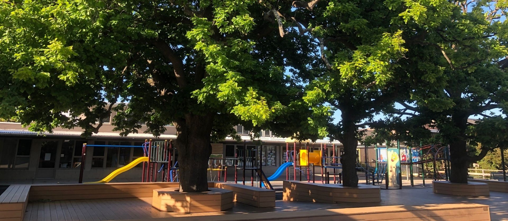

Mount Waverley Primary School
Achieving Excellence Together
A MESSAGE FROM THE PRINCIPAL
Hello Everyone, I am thrilled to be able to extend a very warm welcome to Mount Waverley Primary School. Our school is diverse, full of energy, expertise, optimism and high expectations for every child who enters the school gates.
We meet the needs of all our students ensuring that they have high academic success and thrive in their personal growth and wellbeing. Please explore our website to learn more about us. Even better, book a school tour and see for yourselves.I am a very proud principal and would love to share our best practice & approaches with you all.
Kind regards,
Campbell Mckay
Principal
GALLERY


SPECIALISTS
VISUAL ARTS
The Mount Waverley Visual Arts program is designed to promote creativity and imagination, where students are able to exercise their emotions and intellect simultaneously, therefore providing a vehicle for self-expression. The art program will endeavour to provide all students with the opportunity to use and experience a wide range of art/craft media, techniques and processes to develop an appreciation of all forms of the Visual Arts, in a relaxing and enjoyable environment.
LIBRARY
The library is open before and after school and for half of lunchtime. Students and their families are encouraged to exchange their books, seek book suggestions, or simply meet friends or read. Library classes are fortnightly, with timetabled borrowing opportunities in the alternative week.
LOTE - JAPANESE
All students will have the opportunity to be involved in LOTE sessions in Japanese based on the Australian Curriculum. The program will be organised into the two dimensions of communicating and understanding. Communicating will involve students in learning the knowledge, skills and behaviours through speaking, listening, reading and writing. Understanding will develop students' knowledge of the connections between language and culture.
MUSIC
The Music Program at Mount Waverley Primary School aims to foster a lifelong love and passion for music. Throughout their time at MWPS, students develop advanced skills in composition and performance, opening up a wonderful freedom of expression and creative potential.
PE - PHYSICAL EDUCATION
The Health and Physical Education program at Mount Waverley Primary School provides students with knowledge, skills and behaviours to enable them to achieve a degree of autonomy in developing and maintaining their physical, mental, social and emotional health. This program focuses on the importance of a healthy lifestyle and physical activity in the lives of individuals and groups in our society.
STEM
Our STEM Program encourages students from Prep to Year 6 to engage scientifically with the world around them. Delivered by our dedicated STEM teacher, these lessons encourage students to investigate scientific topics, presenting a hypothesis to conduct their experiments before reaching a conclusion. Students are engaged in real life activities about survival, innovation, change and discovery by participating in hands-on investigations, collaborative group inquiry and problem-based learning. The units covered include biological, chemical, physical and; earth and space sciences.
SUSTAINABILITY
The Sustainability curriculum is designed to educate students in a range of environmental, social, ethical, historical and practical areas. Learning activities are based in nature and hands on where practicable.